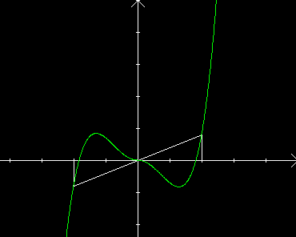

| Choisissez votre langue ! | Choose your language ! |
Domaines symétriques
Soit D une partie de ℝSymmetric domains
Let D be a subset of ℝdéfinition 1
On dit que D est
'symétrique'
si ∀x∈D on a -x∈D.
definition 1
It is said that D is
'symmetric'
if ∀x∈D we have -x∈D.
Domaines symétriques
Soit D une partie de ℝOn dit que D est
'symétrique'
si ∀x∈D on a -x∈D.
Exemples:
- ℝ lui-même est symétrique
- ℤ est symétrique
- Tout intervalle [-a,a] est symétrique
- Tout intervalle ]-b,b[ est symétrique
- Le complémentaire d'une partie symétrique est symétrique
- L'intersection de deux parties symétriques est symétrique
- La réunion de deux parties symétriques est symétrique
- ℝ+n'est pas symétrique
- ℕ n'est pas symétrique
- [1,2] n'est pas symétrique
Fonctions paires
Examples:
- ℝ itself is symmetrical
- ℤ is symmetrical
- Every interval [-a,a] is symmetric
- Every interval ]-b,b[ is symmetric
- The complement of a symmetric part is symmetric
- The intersection of two symmetrical parts is symmetrical
- The union of two symmetrical parts is symmetrical
- ℝ+is not symmetrical
- ℕ is not symmetrical
- [1,2] is not symmetric
Even functions
définition 2
On dit qu'une fonction numérique (f,D) définie sur un domaine symétrique D est
'paire'
si elle vérifie: f(-x)=f(x) ∀x∈D.
definition 2
A numerical function (f,D) defined on a symmetric domain D is said to be
'even'
if it verifies: f(-x)=f(x) ∀x∈D.
Exemples:
- La fonction x→x2 est paire sur ℝ
- La fonction x→cos(x) est paire sur ℝ
- La fonction x → (x-1)2 n'est pas paire
Examples:
- The function x→x2 is even on ℝ
- The function x→cos(x) is even on ℝ
- The x function → (x-1)2 is not even
Les représentations graphiques des fonctions paires présentent une symétrie par rapport à l'axe 'vertical' y'Oy.
Fonctions impaires
The graphical representations of the even functions present a symmetry with respect to the 'vertical' y'Oy axis.
Odd functions
définition 3
On dit qu'une fonction numérique (f,D) définie sur un domaine symétrique D est
'impaire'
si elle vérifie: f(-x)=-f(x) ∀x∈D.
definition 3
A numerical function (f,D) defined on a symmetric domain D is said to be
'odd'
if it verifies: f(-x)=-f(x) ∀x∈D.
Exemples:
- La fonction x→x3 est impaire sur ℝ
- La fonction x→sin(x) est impaire sur ℝ
- La fonction x → (x-1)2 n'est pas impaire
Examples:
- The function x→x3 is odd on ℝ
- The function x→sin(x) is odd on ℝ
- The x function → (x-1)2 is not odd

Les représentations graphiques des fonctions impaires présentent une symétrie centrale par rapport à l'origine.
 Il n'en va pas de même pour les fonctions que pour les nombres entiers. Ne pas croire qu'une fonction est soit paire soit impaire, même si son domaine est symétrique. x → (x-1)2 n'est ni paire ni impaire. Par ailleurs une fonction peut être paire et impaire à la fois, c'est le cas de la fonction nulle (et c'est le seul).
Il n'en va pas de même pour les fonctions que pour les nombres entiers. Ne pas croire qu'une fonction est soit paire soit impaire, même si son domaine est symétrique. x → (x-1)2 n'est ni paire ni impaire. Par ailleurs une fonction peut être paire et impaire à la fois, c'est le cas de la fonction nulle (et c'est le seul).
Cependant !
Cependant !
Graphs of odd functions have central symmetry relative to origin.
The same is not true for functions as it is for integers. Do not believe that a function is either even or odd, even if its domain is symmetric. x → (x-1)2 is neither even nor odd. Moreover a function can be even and odd at the same time, it is the case of the null function (and it is the only one).
However !
However !
propriété 1
Toute fonction sur un domaine symétrique peut s'écrire comme somme d'une fonction paire et d'une fonction impaire.
property 1
Any function on a symmetric domain can be written as the sum of an even function and an odd function.
Pour la démonstration voir .
Parité des fonctions polynomiales
Il est évident que: For a proof see .
Parity of polynomial functions
It's obvious that:propriété 2
Tout polynôme ne comportant que des puissances paires de la variable est une fonction paire.
property 2
Any polynomial with only even powers of the variable is an even function.
propriété 3
Tout polynôme ne comportant que des puissances impaires de la variable est une fonction impaire.
property 3
Any polynomial with only odd powers of the variable is an odd function.
Les réciproques sont vraies. En effet si P(x) est pair, soit Q(x) le polynôme obtenu en ne prenant que les puissances paires de P(x). Alors P(x)-Q(x) est pair, mais il est aussi impair puisqu'il ne comporte que des puissances impaires, donc c'est la fonction nulle.
The converses are true. Indeed if P(x) is even, let Q(x) be the polynomial obtained by taking only the even powers of P(x). So P(x)-Q(x) is even, but it's also odd since it only has odd powers, so it's the zero function.
propriété 4
Tout polynôme qui est une fonction impaire ne comporte que des puissances impaires de la variable.
property 4
Any polynomial that is an odd function only has odd powers of the variable.
Parité et opérations algébriques
Les résultats les plus courants sont rassemblés dans .Parité et composition
Voir par exemple .Parité et variation
Parity and algebraic operations
The most common results are collected in .Parity and composition
See for example .Parity and variation
propriété 5
Une fonction paire ne peut être strictement monotone sur son domaine symétrique D.
property 5
An even function cannot be strictly monotonic on its symmetric domain D.
En effet prenons x0 et x1 positifs avec x1>x0 on a alors:
f(-x0)-f(-x1)=f(x0)-f(x1)
Donc les deux quantités ont même signe. cependant -x1<-x0.
f(-x0)-f(-x1)=f(x0)-f(x1)
Donc les deux quantités ont même signe. cependant -x1<-x0.
Indeed take x0 and x1 positive with x1>x0 we then have:
f(-x0)-f(-x1)=f(x0)-f(x1)
So the two quantities have the same sign. however -x1 <-x0.
f(-x0)-f(-x1)=f(x0)-f(x1)
So the two quantities have the same sign. however -x1 <-x0.
|
Création Gilles Dubois - licence CC-BY-SA
Created by Gilles Dubois - licence CC-BY-SA
|
Septembre 2023
September 2023
|
Version mobile Jquery
Mobile Jquery version
|
|